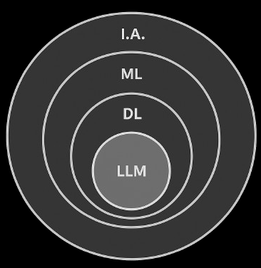
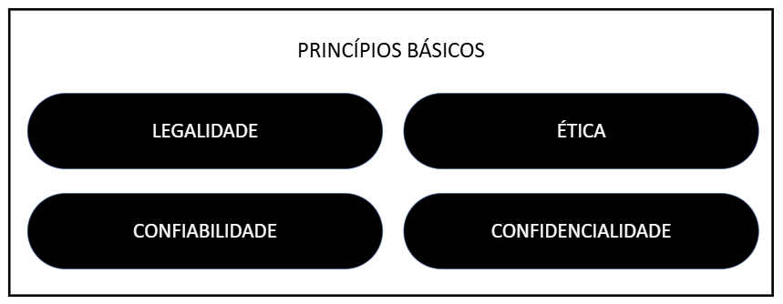

O avanço das tecnologias de inteligência artificial (IA) transformou a forma como pessoas e organizações processam informações e tomam decisões. No âmbito policial, essas ferramentas trazem oportunidades para ampliar a eficiência, automatizar tarefas repetitivas e analisar grandes volumes de dados. Contudo, também apresentam riscos que precisam ser cuidadosamente geridos. Este módulo procura capacitar o investigador a utilizar assistentes baseados em IA, de forma segura, ética e alinhada à missão institucional.
A Inteligência Artificial (IA) é um campo da ciência da computação voltado ao desenvolvimento de máquinas e programas capazes de reproduzir compor tamentos tipicamente humanos. Trata-se de uma área multidisciplinar que reúne conhecimentos de matemática, estatística, engenharia, linguística, psicologia cognitiva e ciência de dados.
Entre as principais capacidades que a IA tenta reproduzir, destacam-se:
a) Aprendizado: capacidade de adquirir conhecimento a partir de dados e experiências anteriores. Essa característica permite que sistemas melhorem seu desempenho com o tempo.
b) Raciocínio: habilidade de processar informações e chegar a conclusões lógicas, aplicando técnicas de inferência.
c) Percepção: interpretação de dados sensoriais como imagens, sons e textos, tornando possível o reconhecimento de padrões no ambiente.
d) Adaptação: ajuste do comportamento com base em novas informações, possibilitando a tomada de decisões em cenários dinâmicos.
Assim, a IA não se limita a algoritmos estáticos; ela incorpora processos que simulam o funcionamento cognitivo humano, buscando maior autonomia e precisão em tarefas complexas.

Figura 63 – IA, ML, DL, LLM.
A Inteligência Artificial é uma área ampla. Dentro dela, destacam-se níveis de especialização: i. Machine Learning (ML) – refere-se ao aprendizado de máquina, processo no qual algoritmos identificam padrões em dados e melho ram seu desempenho sem necessidade de programação explícita para cada tarefa. Exemplos: classificação de e-mails como spam, reconhecimento simples de padrões em texto ou números; ii. Deep Learning (DL) – é um subconjunto do ML que utiliza redes neurais artificiais profundas. Esse modelo imita o funcionamento do cérebro humano por meio de várias camadas de processamento, permitindo reconhecer correlações complexas em grandes volumes de dados. É a base de sistemas avançados como reconhecimento de voz, imagens e LLMs; iii. Large Language Models (LLM) – são modelos de linguagem de larga escala, treinados sobre vastos conjuntos de textos. Baseiam-se em arquiteturas de deep learning (como o Transformer35) e atuam como sistemas de previsão estatística de palavras, permitindo a geração de textos coerentes, a resposta a perguntas e a execução de tarefas mais complexas de linguagem natural. Assim, há uma hierarquia: IA ML DL LLM, em que cada nível agrega maior especialização e complexidade. O modelo Transformer foi criado para ajudar computadores a entenderem melhor textos e frases. Em vez de ler palavra por palavra na ordem, ele consegue olhar para toda a frase de uma vez e identificar quais partes são mais importantes. Isso torna o processo mais rápido e eficiente, especialmente em tarefas como tradução, resumo ou geração de textos.
O estudo sobre o conceito de “Inteligência Artificial” começou por volta de 1950, quando Alan Turing propôs o jogo da imitação (conhecido como Teste de Turing) como forma de testar se máquinas poderiam pensar como humanos. Desde então, ao longo das décadas, a IA foi evoluindo de sistemas simples para aplicações mais complexas. Gradualmente, foi se integrando ao cotidiano: filtros AntiSpam de e-mail, mecanismos de recomendação em plataformas digitais, algoritmos de redes sociais, assistentes de voz (Siri, Alexa), sistemas de OCR, reconhecimento facial, tradutores automáticos etc.
Popularmente, considera-se que o grande marco recente ocorreu em 2023, com o lançamento do ChatGPT ao grande público, inaugurando a era dos LLMs e consolidando a IA como uma ferramenta acessível, estratégica e presente em diversas áreas.
Os LLMs são construídos a partir de redes neurais profundas e treinados em grandes volumes de texto. Seu funcionamento baseia-se na previsão da próxima palavra (token36), de acordo com o contexto fornecido.
O desenvolvimento dos LLMs está diretamente ligado ao artigo “Attention is All You Need”37 (2017), publicado por engenheiros do Google, que apresentou a arquitetura Transformer, permitindo que redes neurais processassem linguagem de forma mais eficiente. Essa inovação viabilizou a criação de modelos como GPT, BERT e outros, treinados em bases textuais massivas.
Hoje, os LLMs mais populares incluem GPT (OpenAI), Gemini (Google DeepMind), Gemma (também da Google), Claude (Anthropic), LLaMA (Meta), Qwen (Alibaba), DeepSeek (DeepSeek AI), Grok (xAI), entre outros. Cada um apresenta particularidades em desempenho, abertura de código e aplicações, mas todos se fundamentam nos mesmos princípios da arquitetura Transformer.
Um LLM funciona como um sistema estatístico avançado. Ele analisa sequên cias de palavras já vistas no treinamento e calcula probabilidades para prever a próxima palavra mais provável em determinado contexto.
Essa capacidade permite uma ampla gama de usos, como:
No contexto de modelos de linguagem, um token é a menor unidade de texto pro cessada pelo sistema (palavra, parte de palavra ou símbolo). O LLM gera um token por vez, de forma sequencial, até formar a resposta completa.
VASWANI, Ashish et al. Attention is All You Need. arXiv:1706.03762 [online]. 2017. Disponível em: https://arxiv.org/abs/1706.03762. Acesso em: 29 ago. 2025.
Assim, o modelo não “pensa” como um humano, mas estima a sequência mais plausível com base nos padrões aprendidos. Portanto, pode perfeitamente apoiar investigações criminais, desde que haja controle humano a todo tempo, especialmente no que se refere à sensibilidade dos dados.
O processamento interno de um LLM pode ser descrito em etapas fundamentais:
i. Tokenização: o texto é segmentado em unidades menores (palavras,
fragmentos ou símbolos) que podem ser processadas pelo modelo.
ii.Embeddings: cada token é convertido em um vetor numérico que
representa seu significado em um espaço matemático multidimen
sional.
iii. Mecanismo de atenção: o modelo atribui diferentes níveis de
relevância a cada token dentro do contexto, capturando relações
de curto e longo alcance entre palavras.
iv. Camadas empilhadas: sucessivas transformações refinam as repre
sentações, extraindo padrões cada vez mais abstratos e complexos.
v. Autorregressão: a geração ocorre de forma sequencial, em que
o modelo produz um token de cada vez com base nos anteriores,
construindo progressivamente a resposta.
O uso da Inteligência Artificial (IA) em investigações policiais deve observar alguns princípios essenciais. O primeiro deles é a legalidade, que consiste na plena adequação às normas vigentes, em especial à Portaria MJSP nº 961/2025, garantindo que todo processamento de dados siga parâmetros oficiais e regu lamentados. A Portaria MJSP nº 961/2025 será objeto de aprofundamento no próximo subcapítulo.
Além da conformidade legal, é indispensável que o uso da IA seja pautado pela ética que se refere à responsabilidade de garantir que sistemas automatizados sejam desenvolvidos e aplicados de forma justa, transparente e segura, respeitando os direitos fundamentais dos indivíduos. Isso inclui a proteção da privacidade, a não discriminação, a prestação de contas e a prevenção de danos. No contexto institucional, especialmente em áreas sensíveis como segurança pública, o uso ético da IA exige rigor técnico e normativo para evitar vieses, assegurar a legalidade das decisões automatizadas e preservar a confiança da sociedade nas instituições. A ética, nesse sentido, não é somente um valor abstrato, mas um imperativo operacional que orienta o uso legítimo e responsável da tecnologia.
Outro princípio é a confiabilidade, que diz respeito à capacidade do modelo em executar a tarefa com êxito. Isso envolve verificar se o desempenho do sistema é adequado, ou seja, se a saída é confiável o suficiente para auxiliar na tarefa. Também se aplica para avaliar se a taxa de processamento (tokens por segundo) atende à demanda e se a disponibilidade do serviço é consistente para uso operacional. Este princípio também exige que os algoritmos sejam auditáveis, garantindo que suas decisões possam ser reproduzidas e justificadas tecnicamente. Para instituições, isso significa que a IA deve ser integrada com supervisão humana e protocolos próprios de validação, além da conformidade com normas legais e éticas.
Por fim, destaca-se a confidencialidade. O sigilo dos dados sensíveis deve ser preservado em qualquer circunstância. Para isso, é fundamental que o processamento ocorra somente em servidores seguros, considerando inclusive a anonimização38 das informações, quando necessário. Nesse ponto, é importante atentar para as diferenças entre ambientes de uso: provedores gratuitos, como o Gemini API “free tier”, podem coletar dados para aprimorar seus produtos; já serviços pagos, como o plano corporativo da OpenAI, asseguram que os dados não sejam usados para treinamento; soluções institucionais, como o Microsoft Copilot Chat, contam com proteção empresarial vinculada a termos de aditivos de proteção de dados; e servidores locais, como o Ollama, oferecem ainda mais controle sobre os dados processados permitindo inferências 100% locais, sem risco de exposição na internet.

Normativo aplicável - legalidade
A Portaria MJSP nº 961/2025 estabelece diretrizes para o uso de soluções de tecnologia da informação, incluindo inteligência artificial, em investigações 38 Anonimização: conforme a LGPD, é o processo técnico que torna irreversível a identifica ção de um indivíduo. Dados devidamente anonimizados deixam de ser considerados “dados pessoais”. criminais e atividades de inteligência de segurança pública. O texto aplica-se a órgãos federais como a Polícia Federal, a Polícia Rodoviária Federal e a Polícia Penal Federal, bem como a entidades estaduais, distritais e municipais que utilizem recursos de fundos nacionais de segurança. Como fundamentos, aponta a legalidade, a proporcionalidade, a proteção de dados pessoais, a integridade dos sistemas e a transparência.
O texto normativo é fundamentado em princípios como o respeito aos direitos fundamentais, à privacidade, à proteção de dados pessoais, à legalidade e à proporcionalidade das ações. Também enfatiza a integridade da cadeia de custódia da prova, a segurança da informação e a transparência na utilização das tecnologias.
Ainda define conceitos essenciais como dados pessoais e sensíveis, inteligência de segurança pública, investigação criminal, tratamento de dados e logs de acesso e delimita o uso das tecnologias àquilo que for estritamente necessário para o cumprimento das atribuições legais dos órgãos de segurança, vedando o uso indiscriminado ou sem finalidade clara.
A Portaria, quanto ao uso, exige proporcionalidade e revisão humana em casos de risco a direitos fundamentais. Nesse contexto, os órgãos gestores são obrigados a adotar medidas técnicas e administrativas para garantir a segurança das soluções tecnológicas, como controle de acesso, autenticação segura, auditorias periódicas, capacitação dos usuários e planos de contingência. Prevê responsabilização administrativa, civil e criminal em caso de uso indevido das tecnologias
A Engenharia de Prompt corresponde ao conjunto de técnicas utilizadas para estruturar as instruções fornecidas a um modelo de linguagem, influenciando diretamente a qualidade e a precisão das respostas. O ponto central é que a IA não adivinha o que se deseja: ela interpreta a entrada textual e gera saídas conforme padrões aprendidos. Assim, quanto mais bem formulado for o comando, maior será a chance de obter respostas úteis, coerentes e dentro do esperado.
Existem diferentes métodos para orientar a geração de respostas:
& Act) e Self-consistency, que ajudam a aumentar a robustez e
reduzir vieses.
Além da escolha da técnica, a estrutura do prompt é determinante. Recomenda-se segmentar as partes principais: objetivo, regras, contexto, público -alvo e saída esperada. Esse padrão aumenta a clareza e a rastreabilidade, especialmente em investigações criminais.
A forma como o prompt é estruturado impacta diretamente a interpretação e a qualidade da resposta gerada por um modelo de linguagem. Duas formas bastante utilizadas são o Markdown e o XML, cada uma com características próprias e aplicabilidades distintas.
Por padrão, a maioria dos LLMs organiza respostas em Markdown, linguagem de marcação leve amplamente utilizada em treinamentos de modelos. Sua principal vantagem é a simplicidade sintática, permitindo organizar o texto em títulos, listas, tabelas e blocos de código de forma intuitiva.
2, e assim por diante).
Uma alternativa é a utilização de tags XML, especialmente em prompts complexos que envolvem múltiplos componentes (contexto, instruções, exemplos, regras). Essa prática, sugerida em guias especializados como os da Anthropic39, aumenta a precisão da interpretação do modelo, pois separa de forma inequívoca cada parte do comando. Essa segmentação contribui para:
39 SAMPAIO, Rafael Cardoso; SABBATINI, Marcelo; LIMONGI, Ricardo.Diretrizes para o uso ético e responsável da Inteligência Artificial Generativa: um guia prático para pesquisadores. São Paulo: Editora Intercom, 2024. Disponível em:https://www.portcom.intercom.org.br/ebooks/ detalheEbook.php?id=57203. Acesso em: 29 ago. 2025. A sintaxe do XML é baseada em tags:
<regras>.
Quadro 9-Estrutura do prompt (Markdown vs XML)
| Markdown | XML |
|---|---|
| # Objetivo Geral Gerar um comentário técnico sobre o elemento de informação. # Contexto [Resumo da investigação em andamento] # Elemento de Informação [Dado fornecido] # Regras - Descreva o tipo de elemento. - Indique as partes envolvidas. - Contextualize a relevância do elemento diante do caso. ## Restrições - Somente o contexto determinará a rele vância. - Não use inferências ou conhecimentos gerais, limite-se aos dados fornecidos. # Saída Esperada Texto em linguagem formal e técnica, adequado a uso jurídico. | <objetivo geral> _ Gerar um comentário técnico sobre o elemento de informação. </objetivo geral> _ <contexto> [Resumo da investigação em andamento] </contexto> <elemento de informacao> _ _ [Dado fornecido] </elemento de informacao> _ _ <regras> Descreva o tipo de elemento, partes envolvidas e relevância diante do contexto. <restrições> - Somente o contexto determinará a relevância. - Não use inferências ou conhecimentos gerais, limite-se aos dados fornecidos. </restrições > </regras> <saida esperada> _ Texto em linguagem formal e técnica, adequado a uso jurídico. </saida esperada > _ |
Em síntese, a Engenharia de Prompt é uma competência essencial para o investigador moderno. Dominar a construção estruturada de prompts, valendo-se de recursos como Markdown e XML, garante maior confiabilidade, reduz riscos de “alucinações”40 e torna a interação com modelos de IA mais previsível e adequada às exigências normativas e operacionais.
A expressão Engenharia de Contexto foi difundida por Andrej Karpathy41 para descrever uma evolução natural da engenharia de prompt. Enquanto esta se concentra em formular instruções claras e eficazes, a engenharia de contexto busca estruturar todo o ecossistema de informações que o modelo de linguagem acessa durante a execução de uma tarefa. O objetivo é preencher a janela de contexto42 com dados relevantes, na medida certa, evitando tanto lacunas quanto excesso de informação que possam comprometer a resposta.
Essa abordagem envolve não somente a redação de instruções, mas também a seleção criteriosa de documentos, exemplos, regras e dados auxiliares que serão apresentados ao modelo. Um contexto bem construído aumenta a precisão, reduz a ocorrência de alucinações e mitiga vieses, permitindo que o modelo opere de forma mais consistente em cenários complexos. Por isso, a engenharia de contexto é considerada uma disciplina mais abrangente, que combina elementos de organização da informação, curadoria de dados e controle técnico do fluxo de interação.
Na prática, a engenharia de contexto exige equilíbrio entre qualidade e quanti dade de dados. Informações insuficientes tornam as respostas vagas ou imprecisas; já um contexto excessivo eleva custos operacionais e pode confundir o modelo. Técnicas como recuperação aumentada de dados (RAG43), compressão de tokens e uso de memória persistente exemplificam estratégias aplicáveis. Dessa forma, a engenharia de contexto complementa a engenharia de prompt, fornecendo a base necessária para que comandos curtos e objetivos gerem resultados robustos e adequados às necessidades investigativas e normativas. 40 Na inteligência artificial, especialmente em modelos de linguagem como os LLMs, o
termoalucinaçãorefere-se ao fenômeno em que o modelo gera uma resposta queparece
correta ou plausível, mas que éfalsa, imprecisa ou inventada. 41 Andrej Karpathy: cientista da computação, ex-diretor de IA da Tesla e ex-pesquisador da
OpenAI. Tornou-se referência em visão computacional e aprendizado profundo, popularizando
conceitos como “engenharia de contexto”. 42 Janela de Contexto: limite de memória temporária de um modelo de linguagem, medido
em tokens. Define a quantidade máxima de informações que podem ser processadas em
uma única interação, impactando diretamente a qualidade e a completude das respostas. 43 RAG (Retrieval-Augmented Generation): técnica que combina modelos de linguagem com
mecanismos de busca em bases externas. O LLM consulta documentos relevantes durante
a geração da resposta, ampliando a precisão e atualidade das informações.
A Polícia Federal já faz uso de inteligência artificial muito antes da populariza ção dos modelos de linguagem de larga escala. Diversas soluções especializadas são aplicadas em tarefas de apoio à análise, como transcrição de áudios, reconhecimento de caracteres em documentos, classificação de imagens e identificação biométrica. Esses sistemas demonstram que a incorporação da IA às rotinas policiais não começou com os LLMs. No entanto, é inegável o salto no avanço das redes de Inteligência Artificial generativa, trazendo mais possibilidades de aplicação de novos modelos à rotina de investigação.
O emprego da Inteligência Artificial Generativa no âmbito da Polícia Federal já apresenta casos de uso consolidados e em expansão. Em inquéritos policiais, por exemplo, é possível empregar LLMs para organizar informações de autoria e materialidade, permitindo a geração de minutas de relatórios técnicos ou despachos com maior padronização e clareza.
Outro caso recorrente é o apoio na análise de dados financeiros e de telecomunicações, em que modelos contextualizados com esquemas de investi gação podem identificar padrões suspeitos e propor hipóteses de vínculos entre investigados. Da mesma forma, técnicas de engenharia de contexto permitem alimentar o modelo com decisões judiciais, relatórios de inteligência e registros administrativos, reduzindo a ocorrência de lacunas e alucinações. Na prática, a Polícia Federal vem apresentando casos de uso de aplicação para:
(ex.: corrupção, lavagem de dinheiro e organizações criminosas),
combinando I.A. generativa com linguagens de programação como
Python para análise de vasto volume de dados.
Esses usos estão sempre vinculados ao controle humano e às exigências da Portaria MJSP nº 961/2025, que estabelece que a IA deve ser instrumento auxiliar, com rastreabilidade, proporcionalidade e revisão obrigatória. Assim, a integração de LLMs ao trabalho policial não substitui o investigador, mas amplia sua capacidade analítica, tornando os procedimentos mais céleres, consistentes e tecnicamente embasados.
O Copiloté uma solução de inteligência artificial desenvolvida com base na arquitetura GPT-4, projetada para atuar como assistente digital em ambientes profissionais e operacionais. Integrado ao ecossistema da Microsoft, o Copilot é capaz de compreender linguagem natural, interpretar contextos complexos e oferecer respostas precisas, seguras e contextualizadas. Sua aplicação na ativi dade policial representa um avanço significativo na modernização das rotinas investigativas, administrativas e formativas.
No contexto da Polícia Federal, o Copilot pode ser utilizado como ferramenta estratégica em diversas frentes. Na área de investigação, auxilia na análise de documentos, cruzamento de dados, elaboração de relatórios e identificação de padrões em grandes volumes de informação. Sua capacidade de sintetizar con teúdos e gerar insights contribui diretamente para o aprimoramento da produção de inteligência, permitindo a redação de peças técnicas, estudos prospectivos e sínteses informativas com linguagem institucional e foco na segurança pública.
O Copilot é capaz de automatizar tarefas rotineiras, como organização de planilhas, geração de gráficos, tradução de documentos e revisão textual, liberando tempo para atividades de maior valor estratégico. Outro diferencial relevante é sua capacidade de interpretar dispositivos legais e normativos, contextualizando leis, decretos e regulamentos em situações práticas. Isso o torna um aliado na compreensão jurídica aplicada à atividade policial, especialmente em áreas sensíveis como o combate à lavagem de dinheiro, crimes cibernéticos e operações com ativos virtuais.
Do ponto de vista técnico, o Copilot opera com interação multimodal, compreendendo texto, imagens, tabelas e comandos em linguagem natural. Sua arquitetura respeita diretrizes rígidas de segurança, operando dentro dos limites éticos e legais exigidos em ambientes institucionais. Além disso, possui mecanismos de atualização contínua, que permitem acesso a informações confiáveis e recentes, e pode ser personalizado conforme as demandas específicas de setores, disciplinas ou perfis operacionais.
Apesar de sua sofisticação, é fundamental compreender que o Copilot não substitui o juízo crítico, a experiência operacional ou a autoridade legal do policial. Seu uso deve ser orientado por critérios técnicos, supervisão institucional e respeito à legislação vigente. A inteligência artificial é uma ferramenta de apoio, e não um agente decisório.
O policial federal que possui acesso institucional ao Microsoft 365 pode utilizar o Copilot por meio de diversos canais integrados às ferramentas corporativas da Microsoft. O primeiro e mais direto ponto de acesso é oMicrosoft Teams, onde o Copilot aparece como uma aba ou botão na interface principal, permitindo interações em linguagem natural para organização de reuniões, geração de atas, análise de mensagens e apoio à comunicação interna.
Onavegador Microsoft Edgeoferece acesso ao Copilot diretamente pela interface, com um botão localizado no canto superior direito. Esse canal é útil para pesquisas assistidas, leitura de normativos e análise de conteúdo web com suporte da IA.
Por fim, o policial pode acessar o Copilot peloportal do Microsoft 365, disponí vel emoffice.com, utilizando seu e-mail institucional. Após o login, o Copilot estará disponível nos aplicativos online como Word, Excel, PowerPoint e Outlook, além de permitir colaboração em tempo real com arquivos armazenados no OneDrive.
Esses canais garantem que o Copilot esteja presente nas principais rotinas operacionais, administrativas e formativas da Polícia Federal, sempre respeitando os parâmetros de segurança e conformidade institucional.
É absolutamente indispensável que o Copilot seja usado, para fins corporativos, em ambiente PROTEGIDO. Para tanto, o servidor da Polícia Federal deverá entrar com seu login e com sua senha corporativa e verificar se o escudo indicativo de proteção acusa a cor VERDE e os dizeres “PROTEÇÃO DE DADOS EMPRESARIAIS”.
De acordo com a Microsoft, empresa com a qual a Polícia Federal mantém contrato, os dados inseridos no ambiente PROTEGIDO do Copilot estarão sub metidos à seguinte política: “Com a Proteção de Dados Empresariais (EDP), os prompts e respostas são protegidos pelos mesmos termos contratuais e compromissos amplamente confiáveis por nossos clientes para seus e-mails no Exchange e arquivos no SharePoint”. Protegemos seus dados:Ajudamos a proteger seus dados com criptografia em repouso e em trânsito, controles rigorosos de segurança física e isolamento de dados entre locatários. Seus dados são privados:Não usaremos seus dados, exceto conforme suas instruções. Nossos compromissos com a pri vacidade incluem suporte ao GDPR, à Fronteira de Dados da UE, à norma ISO/IEC 27018 e ao nosso Adendo de Proteção de Dados. Seus controles de acesso e políticas se aplicam ao Copilot:O Copilot respeita seu modelo de identidade e permissões, herda seus rótulos de sensibilidade, aplica suas políticas de retenção, oferece suporte à auditoria de interações e segue suas confi gurações administrativas. Os controles e políticas específicos variam conforme o plano de assinatura subjacente. Você está protegido contra riscos de segurança e direitos autorais relacionados à IA:Ajudamos a proteger contra riscos focados em IA, como conteúdo prejudicial e injeções de prompt. Para preocupações com direitos autorais de conteúdo, ofere cemos detecção de material protegido e nosso Compromisso de Direitos Autorais com o Cliente. Seus dados não são usados para treinar modelos de base:O Microsoft 365 Copilot Chat usa o contexto do usuário para criar respostas relevantes. O Microsoft 365 Copilot também utiliza dados do Microsoft Graph. De forma consistente com nossas outras ofertas do Copilot, os prompts, respostas e dados acessados por meio do Microsoft Graph não são usados para treinar modelos de base.”